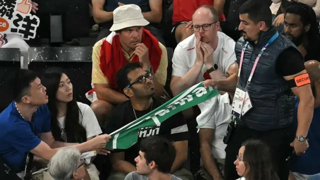
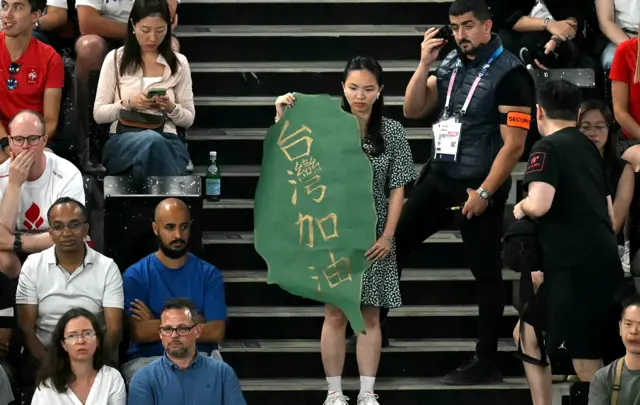
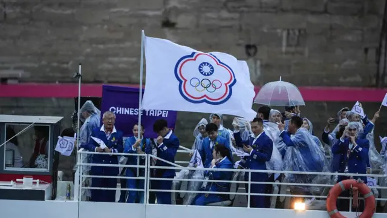

图像来源，ARUN SANKAR/Getty Images
图像加注文字，8月2日“麟洋配”四强战。台湾球迷带着东京奥运麟洋配夺金纪念毛巾，因为上面有“Taiwan”字样，被现场工作人员收走。
7 小时前
在巴黎奥运场馆中，接连发生数起台湾观众的加油海报被工作人员没收、或被要求撤下的事件。为什么这些应援道具不被允许？以“中华台北”（Chinese Taipei）为名参加奥运的台湾运动员及观众，必须遵守哪些规范？
争议事件在力拚卫冕金牌的台湾羽球男双组合李洋、王齐麟赛事上引爆。从四强一路延烧到金牌战。
8月2日“麟洋配”四强对上丹麦组合，场边台湾球迷高举写着“Taiwan”（台湾）的绿色毛巾，被现场工作人员收走。另一位台湾观众杨小姐拿着形状是台湾本岛的绿色海报，上面用中文写“台湾加油”，也被工作人员要求解释海报内容。后来一名身穿粉红色上衣的男子抢走海报并破坏，虽然立刻被工作人员带出会场，但海报并没有还给杨小姐。

图像来源，ARUN SANKAR/ Getty Images
图像加注文字，台湾观众杨小姐拿着形状是台湾本岛的绿色海报，上面用中文写“台湾加油”，也被工作人员要求解释海报内容。
根据台湾中央社报导，台湾外交部驻法国台北代表处已经协助遭人身攻击的杨小姐报案。
至于Taiwan字样的毛巾被没收，代表处指出，中华民国国旗是大会明令禁止携带的旗帜，但中英文的 “台湾”字样的物品并没有明令禁止，仍与国际奥委会和巴黎奥委会沟通中。代表处认为，现场执法争议不排除是部分工作人员对规章没有完整认识，在现场情况混乱下，将规章过度诠释。
“我上面写台湾，工作人员就说不可以带进去，他说因为台湾是政治用语。”来自台湾的观众王浩安对BBC中文说。
她在8月4日进场观看“麟洋配”对决中国组合王昶、梁伟铿的金牌战。她指出，进场前的安检，工作人员会仔细询问海报上的中文字是什么意思。她用法文向工作人员解释：“台湾是一个地名。”但工作人员回应，在他们收到的相关守则当中，“台湾”就有政治意涵，不得进入奥运会场。
奥运性别风波解构：为何台湾林郁婷等女拳手接连被质疑是男性？巴黎奥运：为什么世界反兴奋剂机构感到被夹在中美之间巴黎奥运截至目前引发的三大争议 不限于开幕式的尺度
奥运禁止政治宣传
国际奥林匹克委员会（IOC）制定的奥林匹克宪章（Olympic Charter）地位如同奥运的宪法。奥运的准则、规范，如有争议，都必须回归到奥林匹克宪章讨论。
根据奥林匹克宪章（Olympic Charter）第50条第二款：“在任何奥林匹克场地、场馆或其他区域，不得有任何形式的示威或政治、宗教或种族宣传。”
在巴黎奥运会的官方网站，可以查到“禁止携入场馆的物品清单”：包含宗教或政治信息，或被视为有悖于公共秩序的内容的海报、横幅、标志，或其他可用于示威的物品，禁止入场。
但拿着写“台湾”的标语，是否等同于“政治宣传”？因为奥林匹克宪章和主办城市没有更进一步的释义条文，因而有诠释的灰色地带。
“共识就是，不能做政治主张。”台湾政治大学法律学系副教授林佳和接受BBC中文采访时指出，奥林匹克宪章规范在场馆内，包含观众所在的看台区域，不得从事政治示威或宣传。
图像来源，PAU BARRENA/Getty Images
图像加注文字，象征支持加泰隆尼亚独立的“孤星旗”
他举例，在西班牙比赛时，出现象征支持加泰隆尼亚独立的红、黄、蓝相间“孤星旗”（Estelada），这就是明确政治主张。如果台湾观众举出“台湾中国、一边一国”的海报，也算违反规定。
在国际体育赛事上做“政治主张”并不是罕例，最著名的案例之一，是1968年墨西哥城奥运，非裔美国短跑选手史密斯（Tommie Smith）和卡洛斯（John Carlos）在颁奖仪式低头、高举戴着黑手套的拳头，抗议种族不平等，结果遭到禁赛。
林佳和分析，这次巴黎奥运被没收的“台湾加油”海报、Taiwan毛巾，并不是奥林匹克宪章中禁止的“政治宣传”，因此他认为巴黎奥运工作人员有执法过当之嫌。
美联社报导，国际奥委会发言人亚当斯（Mark Adams）回应台湾标语被收走事件，引述1981年的洛桑协议，台湾以”中华台北“参赛的框架。亚当斯表示，横幅是不被允许的，因为这能导致“为什么这个可以，那个不行？”这就是规则之所以严格的原因。要将206个奥委会代表团齐聚竞赛，是一项艰巨的任务。他也指出，巴黎奥运官方网站规定，只有经过大会认定的旗帜才能被带入会场。
着有《奥林匹克之梦：体育视野下的中国与世界1895-2050》的香港大学历史系教授徐国琦认为，这次争议是因为“台湾”这个字眼本身就会被视为政治敏感。
他说，可能有些台湾人认为洛桑协议不公平、不对等，但它就是当时同意且行之有年的协议，在奥运会场上，就只能是”中华台北“。若运动员违反协议，做出和“台湾”相关的政治表态，可能会被取消成绩、被禁赛。若民众违反，最严重会被要求离场。
BBC中文询问巴黎奥运主办方，希望能进一步厘清是基与哪一项规范没收台湾标语，巴黎奥运媒体窗口表示，已将邮件转交国际奥委会。截至发稿，尚未收到国际奥委会回复。
洛桑协议与“中华台北”
台湾运动员以“中华台北”的名义参加奥运，始于1984年的洛杉矶奥运会。
1949年，两岸分治。中华人民共和国开始在国际组织上，与中华民国争夺“谁能代表中国”。1952年，芬兰赫尔辛基奥运会允许中国参赛，当时中华民国总统蒋介石主张“汉贼不两立”，中华民国因此退赛。
1956年澳洲墨尔本奥运会，台湾以“福尔摩沙中国”（Formosa-China）的名义参加，北京退赛。
1960年代东京、墨西哥城的奥运会，国际奥委会让中华民国以台湾（Taiwan）为名义参赛，但在当时“中华民国代表正统中国”的意识形态下，台湾仍持续争取以中华民国（Republic of China）的正式国名参赛。
1979年，台美断交，中美建交，同年国际奥委会便通过决议案，要求台湾更改会名，以“中华台北”的名义参赛，同时禁止使用中华民国国旗。

图像来源，Anadolu/Getty Images
图像加注文字，2024巴黎奥运开幕式，中华台北运动员持中华奥委会会旗。
1981年，中华奥委会与国际奥委会于瑞士洛桑签订协议，依据洛桑协议内容，中华奥委会的英文名称为“Chinese Taipei Olympic Committee”，会徽及会旗经国际奥委会执委会核准，使用梅花形状，中间有奥运五环的中华奥委会会旗，播放的是和国旗歌旋律相同的中华奥委会会歌。
被禁止的青天白日满地红旗
在巴黎奥运场馆中，包括观众席上，贴有用法文公告“场馆内禁止的旗帜”，列出三面旗帜，包括俄罗斯国旗、白俄罗斯国旗，以及中华民国国旗。其搭配的文字分别是俄罗斯、白俄罗斯和台湾。
东京奥运：三个不能用正式名称参赛的代表队东京奥运：台湾的奥运会名称为何如此众说纷纭参赛但不会登上奖牌榜，俄罗斯人如何参加巴黎奥运
2022年2月莫斯科入侵乌克兰后，俄罗斯及盟友白俄罗斯的运动员被禁止参加世界体育比赛。巴黎奥运，俄罗斯和白俄罗斯的运动员以“个人中立运动员”（AIN, Individual Neutral Athletes）的身份，不能使用本国国旗或国歌，也不会被列入官方奖牌榜。
图像来源，Bloomberg
图像加注文字，中国民国国旗
面对巴黎奥运的台湾海报争议，中华奥委会荣誉副主席陈士魁对BBC中文表示，现场工作人员实际执法情形，中华奥委会还在和国际奥委会持续沟通了解中。
他建议台湾观众最好是携带中华奥委会的会旗进场，因为这是合法的旗帜，其他具有台湾元素的旗帜、标语，在现场会遇到什么状况，中华奥委会也难以给出答案。中华奥委会带了上千支小尺寸的会旗，在现场发给观众。